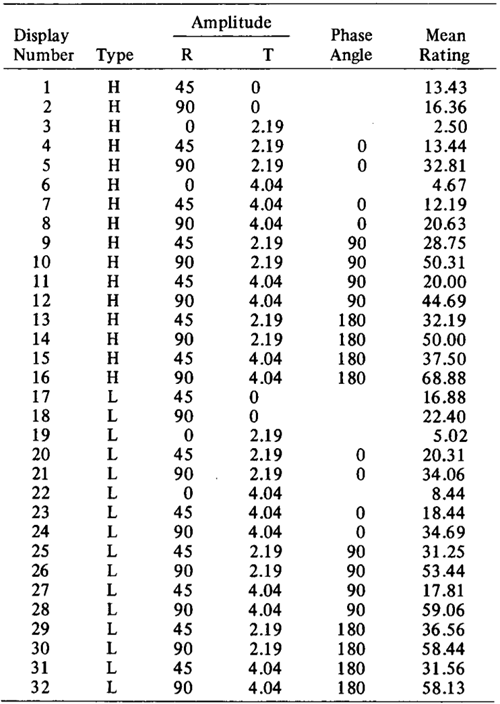
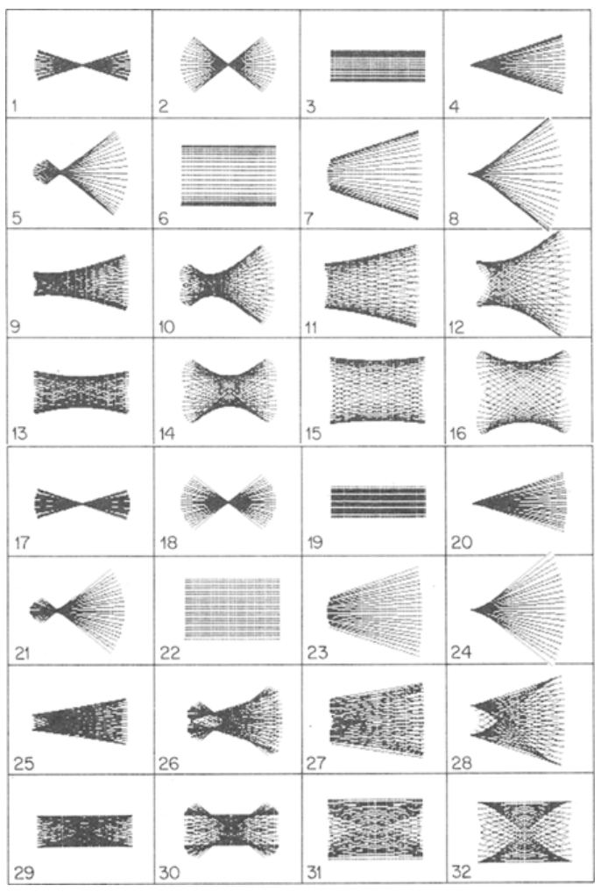

When a straight, rigid line segment is put into certain types of motion, it appears to an observer to lose its rigidity and become rubbery, as in the well-known "rubber pencil illusion."
The factors controlling this illusion were examined, including the nature of the motion employed (harmonic or linear oscillation), the amplitudes of the translational and rotational components of the motion, and the phase relationship between these two components. The effect
is shown to be due to visual persistence. The status of the illusion as a potential counterexample to the rigidity principle (that moving, two-dimensional arrays will be perceived as rigid)
is discussed.
真っ直ぐで剛直な線分がある種の動きをすると、観察者にはそれが剛性を失い、ゴムのように柔らかくなったように見えることがあります。これは、よく知られた「ラバー・ペンシル錯視（rubber pencil illusion）」として知られる現象です。
本研究では、この錯視を左右する要因について検討を行いました。具体的には、動きの性質（調和振動か直線的な振動か）、並進および回転成分の振幅、そしてこれら二つの成分間の位相関係などが対象です。その結果、この現象は
視覚的残像（visual persistence）に起因することが示されました。また、この錯視が「剛性原理」（動いている二次元的な配列は剛体として知覚されるという原理）に対する
反例となり得るかどうかの点についても議論しています。
The "rubber pencil illusion" (RPI) is a striking
visual phenomenon that has gone unnoted in the
scientific literature on human visual perception,
despite its familiarity to many laypeople. Well known
as a magician's trick (Gilbert & Rydell, 1977), it is
easily produced by wiggling a pencil that is held
loosely and off-center between the thumb and index finger. When executed properly, the pencil seems
to become rubbery and to flex conspicuously as it
moves. The experiment I report below suggests
that the illusion is due to the pattern of visual persistence generated by the dynamic visual image. 1
「ラバー・ペンシル錯視（RPI）」は、多くの一般の人々にはよく知られているにもかかわらず、人間の視覚知覚に関する科学文献ではこれまで注目されてこなかった、際立った視覚現象です。マジックのトリック（Gilbert & Rydell, 1977）としても有名なこの現象は、鉛筆を親指と人差し指の間に重心からずらして軽く持ち、揺らすだけで容易に生じさせることができます。適切に行うと、鉛筆はゴムのように見え、動くにつれて目に見えてしなっているように感じられます。以下に報告する実験は、この錯覚が、動的な視覚イメージによって生じる視覚的残像のパターンに起因することを示唆しています。1
The RPI is relevant to the perception of the shapes
of moving objects. When we view the image of a
moving object projected onto a flat screen, how
do we determine if the object is rigid or is changing shape as it moves? Much evidence suggests a
bias toward seeing the stimulus as rigid, even if this
requires perceiving it to move in the third dimension.
For example, if a form presented on a screen changes
smoothly from a rectangle to a trapezoid, it will
be perceived most often as a rigid rectangle that is
rotating in depth, like a door that is swinging open.
This effect is, of course, a well-known instance of
shape constancy (see Goldstein, 1980, and Hochberg,
1978, for summaries). Similarly, if two dots, placed
in diametric opposition, chase one another around
an elliptical path, they are perceived as though they
were the endpoints of an invisible, rigid rod that is
rotating while tilted away from the observer
(Johansson, 1974). Finally, if the shadow of a jumbled and rotating ball of wire is projected onto a
screen, so that its image is a whirling mass of undulating contours, observers quickly see the display
as a rigid structure rotating in depth; this phenomenon is known as the kinetic depth effect (Wallach
& O'Connell, 1953).
RPI は、移動する物体の形状知覚に関係しています。移動する物体の映像を平面スクリーンに投影して見る際、その物体が剛体（変形しない物体）なのか、それとも移動しながら形状を変化させているのかを、私たちはどのように判断するのでしょうか？多くの証拠が示唆しているのは、たとえその刺激を「奥行き方向に動いている」と知覚する必要がある場合であっても、私たちはその刺激を剛体として捉える傾向があるということです。例えば、スクリーン上に提示された図形が長方形から台形へと滑らかに変化する場合、それは多くの場合、奥行き方向に回転する剛体の長方形（ドアが開くときの動きのようなもの）として知覚されます。この効果は、言うまでもなく「形状恒常性」のよく知られた例の一つです（概要についてはGoldstein, 1980やHochberg, 1978を参照）。同様に、直径の両端に位置する2つの点が楕円形の軌道に沿って互いを追いかけるように動く場合、それらは、観察者から遠ざかる方向に傾いた状態で回転する、目に見えない剛体の棒の両端であるかのように知覚されます（Johansson, 1974）。最後に、複雑に絡み合って回転する針金の球体の影をスクリーンに投影し、その映像がうねる輪郭を持つ渦巻く塊のように見える場合でも、観察者はすぐにその表示を奥行き方向に回転する剛体構造として捉えます。この現象は「運動視差による立体知覚（kinetic depth effect）」として知られています（Wallach & O'Connell, 1953）。
Observations such as these led Johansson (1975)
to conclude that "evidently it is obligatory that
the spatial relations between . . . moving stimuli be
perceived as the simplest motion that preserves a
rigid connection between the stimuli. The general
formula is spatial invariance plus motion." Let us
refer to this assertion as the rigidity principle. (A
similar notion has been advanced as the "rigidity
assumption" by Ullman, 1979.) Besides being an illusion that requires an explanation, the RPI would
seem to be a counter-example to the rigidity principle, because the pencil is seen as elastic even though
its image is at all times straight.
こうした観察結果から、ヨハンソン（1975）は、「明らかに、動いている刺激間の空間的関係は、刺激間の剛体的なつながりを維持する最も単純な動きとして知覚されなければならない。一般的な公式は、空間的不変性と運動の組み合わせである」と結論づけた。この主張を「剛体原理」と呼ぶことにしよう。（同様の概念は、ウルマン（1979）によって「剛体仮定」として提唱されている。）説明を必要とする錯覚であることに加えて、RPI（直線像錯視）は、剛体原理の反例のように思われる。なぜなら、鉛筆は、その像が常に直線であるにもかかわらず、弾力性があるように見えるからである。
The purpose of this experiment was to explore
the RPI in the laboratory, using computer-generated
displays shown on the screen of an oscilloscope.
With computer-generated displays, the relevant
spatial and temporal parameters of the effect can
be manipulated systematically and independently
to determine which parameters affect the appearance
ofthe illusion.
本実験の目的は、オシロスコープの画面にコンピュータ生成の図形を表示し、実験室環境下でRPI（回転運動による知覚的錯覚）を検討することであった。コンピュータ生成の図形を用いれば、当該現象に関わる空間的・時間的パラメータを体系的かつ独立して操作することが可能となり、どのパラメータがその錯覚の生起に影響を及ぼすのかを特定することができる。
When the RPI is produced by hand, the pencil
oscillates with both a translational (up and down)
and a rotational (rocking) component. This occurs
because the pencil is held off-center and so its center of gravity is at some distance from where the
pencil is grasped; thus, when the hand is moved up
and down, a rotational component is introduced
automatically into the motion. Both the translational
and rotational components are roughly sinusoidal
or harmonic. Furthermore, the two components
are nearly 180 deg out of phase; that is, when the
translational component reaches the top or bottom
of its excursion (and thus is at zero velocity), the rotational component reaches its midpoint (and thus
is at maximum velocity), and vice versa.
RPIを手作業で作成する際、鉛筆は並進（上下）運動と回転（揺動）運動の双方を伴って振動します。これは、鉛筆が重心からずれた位置で保持されるために起こる現象です。つまり、鉛筆を握っている位置と重心との間に距離があるため、手を上下に動かすと、その動作に回転成分が自動的に加わるのです。並進成分と回転成分はいずれも、概ね正弦波状（調和的）な動きを示します。さらに、これら2つの成分は互いにほぼ180度の位相差があります。すなわち、並進成分がその移動範囲の頂点や底点に達する（つまり速度がゼロになる）とき、回転成分は中間点に達し（つまり速度が最大になり）、その逆もまた同様となります。
If the pencil is held at its center, it does not rotate when moved, and no illusion results. If the pencil is held at its tip, it moves both translationally
and rotationally, but these two components are then
nearly in phase, and little or no illusion results. But
when the standard RPI is simulated at the appropriate speed on the oscilloscope, the moving line
segment appears to move smoothly and become
rubbery, just as in the manually produced RPI.
鉛筆をその中心で保持して動かすと、回転は生じず、錯覚も起こりません。鉛筆を先端で保持して動かすと、並進運動と回転運動の両方が生じますが、これら2つの成分はほぼ同位相となるため、錯覚はほとんど、あるいは全く生じません。しかし、オシロスコープ上で適切な速度を用いて標準的なRPIをシミュレートすると、その動く線分は、手動で生成したRPIの場合と同様に、滑らかに動き、まるでゴムのようにしなやかに変化して見えるようになります。
A group of 16 volunteers recruited from the university community at SUNY at Buffalo served as observers. All had normal or corrected-to-normal vision and all were naive with respect to the purpose of the experiment. Each was tested individually in a single session.
ニューヨーク州立大学バッファロー校のコミュニティから募った16名のボランティアが、観察者として参加した。全員、視力は正常または矯正により正常であり、実験の目的については知らされていなかった。各参加者は、単一のセッションにおいて個別に検査を受けた。
A set of 48 displays was generated and tested. Each display
consisted of a single, straight line placed into motion. The 48
displays resulted from the orthogonal variation of four factors.
(1) The motions used were either harmonic (sinusoidal) or linear
(triangular wave) oscillations. In the harmonic case, the motion
began at zero velocity, increased sinusoidally to a maximum
at its midpoint, and then slowed again in a symmetrical fashion
to zero velocity before reversing direction. In the linear case,
velocity was held constant throughout the trajectory, with instantaneous reversals of direction at the endpoints. (2) The phase
angle (synchrony) between the translational and rotational components was set at 0, 90, or 180 deg. At 0 deg phase angle,
the translational and rotational components were completely
in phase and reached their corresponding maxima and minima
simultaneously; at 180 deg phase angle, the two components
were completely out of phase, as described above. (3) The amplitude of the rotational component was set at 0, 4S, or 90 deg of
rotation. This parameter refers to the angle through which the
stimulus line was rotated (about its midpoint) on the display
screen. (4) The amplitude (total vertical excursion) of the translational component was set at 0,2.19, or 4.04 deg of visual angle.
48種類の刺激パターンを作成し、実験を行った。各パターンは、運動する単一の直線で構成されていた。これら48種類のパターンは、4つの要因を直交的に組み合わせることで生成された。(1) 運動の種類としては、調和振動（正弦波状）または線形振動（三角波状）のいずれかを用いた。調和振動の場合、運動は速度ゼロから始まり、正弦波状に加速して中間点で最大速度に達した後、対称的に減速して再び速度ゼロとなり、そこで反転した。線形振動の場合、軌道全体を通して速度は一定に保たれ、両端点で瞬時に反転した。(2) 並進成分と回転成分の間の位相差（同期性）は、0度、90度、または180度に設定された。位相差が0度の場合、並進成分と回転成分は完全に同位相であり、それぞれの最大値と最小値に同時に達した。一方、位相差が180度の場合、前述の通り、両成分は完全に逆位相であった。(3) 回転成分の振幅は、回転角にして0度、45度、または90度に設定された。このパラメータは、ディスプレイ画面上で刺激となる直線が（その中点を中心に）回転する角度を指す。(4) 並進成分の振幅（垂直方向の総移動距離）は、視角にして0度、2.19度、または4.04度に設定された。
Of the 54 possible combinations of these four factors, all were
used except the six in which the amplitudes of the translational
and rotational components would both be set at zero, since this
would eliminate all motion from the display. Thus, 48 displays
were tested. The frequencies of the translational and rotational
components were both held constant at 3.2 Hz. This value was
selected to maximize the strength of the illusion: with lower frequencies (and thus lower velocities) the illusion diminishes,
whereas with higher frequencies the moving images become
fused and no motion is seen at all.
これら4つの要因から生じうる54通りの組み合わせのうち、並進成分と回転成分の振幅を共にゼロに設定する6通りを除くすべての組み合わせが使用された。振幅をゼロにすると、表示上の動きが完全に消失してしまうためである。したがって、計48通りの表示条件が検証された。並進成分と回転成分の周波数は、いずれも3.2 Hzに固定された。この値は、錯覚の効果を最大化するために選定されたものである。周波数が低い（したがって速度も遅い）と錯覚は弱まり、逆に周波数が高いと、動く画像が融合して見え、動きが全く知覚されなくなるからである。
Note-Included are descriptions of the motion parameters and
the mean rubberiness ratings for the 32 displays tested. The
display numbers correspond to the panels in Figure I. Hindicates harmonic motion and L, linear. For phase, a blank indicates that phase angle is undefined, since one ofthe two motion
components is absent. Amplitudes and phase angles are given in
degrees. R = rotation, and T = translation.
注：ここでは、実験に用いた32種類のディスプレイについて、運動パラメータおよび「ゴムらしさ（rubberiness）」の平均評価値を記載している。ディスプレイ番号は図1の各パネルに対応する。「H」は調和運動（harmonic motion）を、「L」は直線運動（linear motion）を表す。位相については、2つの運動成分のうち一方が存在しないため位相角が定義できない場合、空欄としている。振幅および位相角の単位は度（degree）である。Rは回転（rotation）、Tは並進（translation）を表す。
The moving line was 5.72 deg long and AI deg wide. The luminance of the line segments' was 540 cd/m' against a background of 17 cd/m'. Although 48 displays were tested, only 32
of these are different; this was because when the amplitude of
either the rotational or translational component is set at zero,
phase becomes undefined, and so the triplets of conditions distinguished by phase angle reduce to but one condition. This
was the case for 4 of the 8 translational-rotational combinations
for both harmonic and linear motion. For design purposes,
these redundant conditions were included in the testing, and
their repeated rating scores are averaged in Table I.
移動する線の長さは5.72度、幅は1度であった。線分の輝度は540 cd/m²、背景輝度は17 cd/m²に設定された。計48種類の表示条件が試験されたが、実際に異なる条件は32種類であった。これは、回転成分または並進成分の振幅をゼロに設定すると位相が定義されなくなり、位相角によって区別されるはずの3つの条件が単一の条件に集約されるためである。調和運動および直線運動のいずれにおいても、並進と回転の組み合わせ8通りのうち4通りでこの現象が生じた。設計上の観点から、これら重複する条件も試験に含め、それらに対する評価スコアの平均値を表Iに示した。

Figure 1 shows all 32 different displays as they would appear
integrated over a full cycle, as in a long-exposure photograph.
Table I shows the parameters of each display.
図 1 は、長時間露光写真のように、完全なサイクルにわたって統合された場合の 32 種類の表示すべてを示しています。
表Iは、各表示のパラメータを示しています。

Figure 1. Computer-generated plots of tbe 32 different displays tested. Tbe panel numbers correspond to the display numbers in Table 1. Tbese reproductions are compressed very slightly
in tbe vertical dimension compared witb tbe actual displays tested.
Also, tbe line segments in tbese reproductions appear mucb
more jagged tban those in tbe oscilloscopic displays. Eacb panel
sbows one complete cycle of motion.
図1. 試験に用いた32種類の表示をコンピュータで描画したもの。各パネルの番号は表1の表示番号に対応している。これらの図は、実際に試験で用いた表示と比較して、垂直方向にわずかに圧縮されている。
また、これらの図における線分は、オシロスコープ上の表示に比べて、かなりギザギザして見える。各パネルは、動きの1完全サイクルを示している。
The lines were produced by plotting sets of contiguous points
on the oscilloscope. A sheet of frosted acetate placed over the
display blurred the lines slightly and made their component points
imperceptible. Each line segment was refreshed a fixed number
of times before the next line was displayed, and the refreshing
was identical for all displays. The oscilloscope (Tektronix Model
5110) was equipped with a fast-decay, P-II phosphor (decays
to 10070 in .08 msec and to 0.1070 in 20 msec).
これらの線は、オシロスコープ上に連続する点の集合をプロットすることで描画された。ディスプレイ上に半透明のアセテートシートを重ねることで、線はわずかにぼやけ、構成要素である点は識別できなくなった。各線分は、次の線が表示される前に一定回数リフレッシュされ、そのリフレッシュ動作はすべての表示において同一であった。使用したオシロスコープ（Tektronix Model 5110）には、高速減衰特性を持つP-II蛍光体（0.08ミリ秒で10%に、20ミリ秒で0.1%に減衰する）が搭載されていた。
The testing proceeded as follows. The subjects were first seated
in a dimly illuminated test chamber and were shown one stimulus (Display 16 in Figure I) that most closely simulated the
traditional, manually produced RPI. All 16 subjects spontaneously reported perceiving the moving line as rubbery. They were
then shown all 48 displays, one time each. Four different presentation orders, counterbalanced over subjects, were used.
Half the subjects saw a block of 24 linear motion trials first,
followed by 24 with harmonic motion; the remaining subjects
saw these two blocks in the opposite order. Within blocks, phase
and amplitudes of motion were randomly intermixed. The subjects were asked to judge how "rubbery" each display appeared,
using a scale where 0 indicated complete rigidity and 100 indicated maximum rubberiness. The subjects viewed the display
binocularly from 35 em.
実験は次のように進められた。まず、被験者は薄暗い実験室で着席し、従来の手作業で作成されたRPI（ゴム状の知覚を生じさせる錯視）を最も忠実に再現した刺激（図1のディスプレイ16）を提示された。16名の被験者全員が、動く線に対して自発的に「ゴムのような」質感を覚えたと報告した。続いて、全48種類のディスプレイが各1回ずつ提示された。提示順序は4通り用意され、被験者間でバランスが取られるように割り当てられた。被験者の半数は、まず直線運動の試行（24回）を行い、続いて調和運動の試行（24回）を行った。残りの半数は、これら2つのブロックを逆の順序で実施した。各ブロック内では、運動の位相と振幅がランダムに組み合わされた。被験者は、各ディスプレイがどの程度「ゴムのよう」に見えるかを判断するよう求められた。その際、0を「完全に硬い（剛体）」、100を「最大限にゴムらしい」とする尺度を用いた。被験者は、35cmの距離から両眼でディスプレイを観察した。
The mean numerical response for each display
is also shown in Table 1. These means differed significantly by analysis of variance [F(47,705)=3.73,
p < .00IJ. The pattern in the data is fairly straightforward. (1) For all 16 subjects, both translational
and rotational motion were needed for a strong RPI;
when either amplitude was held at zero, little rubberiness was perceived (mean rating of 11.21 when
either amplitude was zero vs. 36.03 when neither
amplitude was zero). (2) Perceived rubberiness increased with phase angle (12 of the 16 subjects showed
monotonic increases), with mean ratings of 23.32,
38.16, and 46.60 at 0, 90, and 180 deg of phase
angle, respectively. (3) Rubberiness increased from
5.16 to 21.72 to 37.83 as rotational amplitude increased from 0 to 45 to 90 deg (13 subjects showed
a monotonic trend). (4) As translational amplitude
increased' from 0 to 2.19 to 4.04 deg, ratings first
increased from 17.27 to 25.78 (13 subjects showed
increases) and then dropped insignificantly to 25.69
THE RUBBER PENCIL ILLUSION 367
(9 subjects showed decreases). (5) It mattered little
whether the motion was linear or harmonic. Linear
motion produced slightly greater rubberiness than
harmonic in general (25.50 for linear vs. 21.74 for
harmonic, with 11 subjects confirming this difference), but the displays that yielded the very highest
ratings had harmonic motion. Moreover, the pattern
of results was nearly identical for these two types
of motion, in that the eight combinations of rotational and translational amplitudes yielded identical
rank orderings with linear and harmonic motion.
各ディスプレイにおける数値反応の平均値も表1に示されている。分散分析の結果、これらの平均値には有意差が認められた [F(47,705)=3.73, p < .001]。データのパターンは極めて明快である。(1) 16名の被験者全員において、強いRPI（ラバー・ペンシル錯視）が生じるには、並進運動と回転運動の双方が必要であった。いずれかの振幅がゼロの場合、ゴムのような質感（ラバリーナネス）はほとんど知覚されなかった（振幅のいずれかがゼロの場合の平均評価値は11.21、双方がゼロでない場合は36.03）。(2) 知覚されるゴムのような質感は位相角の増大に伴って強まった（16名中12名が単調増加を示した）。位相角0度、90度、180度における平均評価値は、それぞれ23.32、38.16、46.60であった。(3) 回転振幅が0度から45度、90度へと増大するにつれ、ゴムのような質感の評価値は5.16、21.72、37.83へと上昇した（13名が単調増加の傾向を示した）。(4) 並進振幅が0度から2.19度、4.04度へと増大するにつれ、評価値はまず17.27から25.78へと上昇し（13名が上昇を示した）、その後25.69へとわずかに低下した（有意差はなし；9名が低下を示した）。(5) 運動が直線的（リニア）であるか調和的（ハーモニック）であるかは、ほとんど影響しなかった。全体として、直線運動は調和運動よりもわずかに強いゴムのような質感を生じさせたが（直線運動で25.50、調和運動で21.74；11名の被験者がこの差を確認）、最も高い評価値を示したディスプレイは調和運動を用いたものであった。さらに、これら2種類の運動における結果のパターンはほぼ同一であり、回転振幅と並進振幅の8通りの組み合わせにおいて、直線運動と調和運動は同一の順位付けを示した。
The meaning of these results is most easily explained by examining Figure 1. Although these figures are static, they reveal important components
of subjects' percepts of the actual, moving displays.
In Display 16, which produced the highest mean
rubberiness rating of 68.44, motion was harmonic
and the translational and rotational components
were at maximum amplitude and 180 deg out of
phase. The envelope (or scroll) bounding the total
trajectory for this display is curved at its top and
bottom; it is also denser at its top and bottom than
at its center. These densities are inversely related
to line velocity and reveal the amount of time the
line segment remained in each region of the envelope.
A line moving rapidly across the visual field leaves
a smeared trace (Burr, 1980) across the retina corresponding to its afterimage or persistence, and the
density of this trace is inversely proportional to
the velocity of the moving line. A stationary line
would yield a maximally dense trace, whereas a line
moving at great speed would leave a trace that is
barely perceptible. At intermediate speeds, subjects appear to perceive not the true shape of the
moving line at any instant (which, of course, is always straight) but rather the shape of the densest
regions of the persisting trace inside the motion envelope. In the displays where these regions are curved,
rubberiness is perceived, and where they are straight,
it is not.
これらの結果が意味するところは、図1を見ると最も容易に理解できます。図自体は静止画ですが、そこからは、実際に動くディスプレイを見た際の被験者の知覚における重要な要素が明らかになります。
「ゴムのような質感（ラバリアネス）」の評価値が平均68.44と最も高かったディスプレイ16では、動きは調和的であり、並進成分と回転成分はともに振幅が最大で、かつ互いに180度の位相差がありました。このディスプレイの全軌跡を囲む包絡線（またはスクロール）は、上下が湾曲しており、中央部よりも上下の方が密度が高くなっています。この密度の違いは線の速度と逆の関係にあり、線分が包絡線内の各領域に滞留していた時間の長さを表しています。視野内を高速で移動する線は、残像や残効に対応する「ぼやけた痕跡（スミア）」（Burr, 1980）を網膜上に残しますが、この痕跡の密度は線の移動速度に反比例します。静止している線は最も密度の高い痕跡を残すのに対し、高速で移動する線は、かろうじて知覚できる程度の痕跡しか残しません。中程度の速度の場合、被験者は、ある瞬間の移動する線の真の形状（もちろん、それは常に直線です）を知覚するのではなく、むしろ運動の包絡線内部に残る痕跡のうち、密度が最も高い領域の形状を知覚しているようです。これらの領域が湾曲しているディスプレイでは「ゴムのような質感」が知覚され、直線状である場合には知覚されません。
It should be pointed out that even in displays for
which no curvature is apparent in Figure 1, some
rubberiness was reported by a few subjects. For
example, in Displays 1 and 2, which contain only
rotational motion (i.e., translational amplitude was
zero), mean ratings clearly higher than zero were
obtained. With these displays, the moving line does
not appear to curve but it does appear to bend sharply
at its center, as though it were made from two straight
lines hinged together. The nonzero ratings appear
to reflect the failure of a few subjects to discriminate between this type of bending and genuine rubberiness.
図1において曲率が視覚的に確認できないディスプレイであっても、一部の被験者からは「ゴムのような性質（ラバリーナ）」が感じられたとの報告があったことは指摘しておくべきでしょう。例えば、回転運動のみを含む（すなわち並進運動の振幅がゼロである）ディスプレイ1および2において、ゼロを明確に上回る平均評価値が得られました。これらのディスプレイでは、動く線は湾曲しては見えませんが、まるで2本の直線が中央で蝶番（ちょうつがい）のように連結されているかのように、その中央で鋭く折れ曲がって見えます。ゼロではない評価値が得られたのは、一部の被験者が、こうした「折れ曲がり」と「本来のゴムのような性質」とを区別できなかったことを反映しているものと考えられます。
Note that the RPI does not result exclusively from the velocity changes inherent in harmonic motion,
in which velocity drops to zero at the turning points.
Although these low velocities produce high densities in the retinal smear, recall that linear motion
produced a strong RPI too, even though velocity
remains constant here. Thus, the particular spatiotemporal properties of the motion trajectory are
critical; even with linear motion, the interaction
of the translational and rotational components often
makes certain points along the line segment come
to a momentary standstill.
RPIは、折り返し点で速度がゼロになる調和運動に特有の速度変化のみに起因するわけではないことに留意されたい。
こうした低速状態は網膜上の像の「スミア（塗りつぶし）」において高い密度を生じさせるものの、速度が一定に保たれる直線運動であっても、同様に強いRPIが生じることは想起すべきである。したがって、運動軌跡が持つ特有の時空間的特性が極めて重要となる。直線運動であっても、並進成分と回転成分の相互作用によって、線分上の特定の点が瞬間的に静止状態となることが多々あるからである。
Finally, notice that the type of curvature apparent
in Figure 1 differs for the 32 stimuli. These differences are apparent phenomenally when the moving
displays are viewed. For example, the X-shaped configuration in Display 32 yields the impression of a
line whose ends bend when they reach the limits
of their vertical excursion (described as "clomping
feet" by some observers), whereas Display 16, which
has an hourglass configuration in Figure 1, is seen
to bend at its middle, like a thin metal ruler being
flexed.
最後に、図1に見られる曲率のタイプが、32種類の刺激それぞれで異なっていることに注目してください。こうした違いは、実際に動く映像を見た際に、現象として明確に感じ取ることができます。例えば、図1で「X字型」の形状をしている刺激32は、上下運動の限界に達した際にその両端が折れ曲がるような印象を与えます（一部の観察者からは「足を踏み鳴らす（clomping feet）」ような動きと表現されています）。これに対し、図1で「砂時計型」の形状をしている刺激16は、薄い金属製の定規をたわませたときのように、中央部分で折れ曲がるように見えます。
It seems parsimonious to conclude that the RPI
is due to visual persistence, probably occurring early
in the visual system, perhaps even in the retina. Temporal integration occurring anywhere in the system
could produce the illusion. In fact, it can be produced simply by photographing a waving pencil with
a camera using a long exposure duration (although
in this case the temporal integration would arise
on the film, not in the visual system).
RPI は、おそらく視覚系の初期段階、あるいは網膜においてさえ生じている「視覚的残像（visual persistence）」に起因すると結論づけるのが妥当であろう。視覚系のどの段階で生じる時間的統合であっても、この錯覚を引き起こし得る。実際、この現象は、振っている鉛筆を長時間露光で撮影するだけでも再現可能である（もっとも、この場合の時間的統合は視覚系ではなくフィルム上で生じることになるが）。
How does this explanation affect the status of
the RPI as a counterexample to the rigidity principle?
On the one hand, the persistence explanation ascribes
the illusion to relatively early, sensory processes,
whereas the rigidity principle is presumably intended
to explain how ambiguous sensory data are interpreted in later stages of vision. On this ground, one
might wish to dismiss the RPI as irrelevant to the
rigidity principle; after all, persistence causes the
image to bend into a configuration that is inconsistent with rigidity, even for a depthful interpretation.
On the other hand, the very existence of the illusion
implies that the visual system does not, and perhaps
cannot, correct for distortions present in the early
visual representation that may affect the perceived
shape of a moving object. If rigidity were a more
pervasive principle in visual perception, we might
expect that mechanisms would have evolved to
correct for such sources of error (cf. Burr, 1980).
Thus, the rigidity principle can accommodate the
RPI, but only at some cost in its generality. In any
case, the RPI stands as one of a small number of
robust visual illusions that is readily explained by
known sensory factors and as one of the most compelling and easily generated demonstrations of visual
persistence.
この説明は、「剛性原理（rigidity principle）」に対する反例としてのRPI（残像による剛性錯視）の地位にどのような影響を及ぼすのだろうか。一方では、残像（persistence）に起因するこの説明は、当該の錯視を比較的初期の感覚的プロセスに帰するものである。これに対し、剛性原理は、曖昧な感覚データが視覚処理のより後段の段階でどのように解釈されるかを説明することを本来の意図としていると考えられる。こうした点から、RPIを剛性原理とは無関係なものとして退けたくなるかもしれない。実際、残像が生じると、たとえ奥行きを伴う解釈がなされる場合であっても、像は剛性の条件に合致しない形状へと歪んでしまうからである。他方で、この錯視の存在そのものは、視覚システムが、移動物体の知覚形状に影響を及ぼしうる初期視覚表現上の歪みを修正していないこと（そしておそらくは修正できないこと）を示唆している。もし剛性原理が視覚知覚においてより広範に作用する原理であるならば、こうした誤差の原因を修正するようなメカニズムが進化したはずだと考えられるだろう（Burr, 1980 参照）。したがって、剛性原理はRPIを包含しうるものの、それは原理の一般性をある程度犠牲にすることによってのみ可能となる。いずれにせよ、RPIは、既知の感覚的要因によって容易に説明できる数少ない堅牢な視覚錯視の一つであり、かつ視覚的残像を示す最も説得力があり、容易に再現可能なデモンストレーションの一つとして位置づけられる。
I. Magicians appear not to have a firm grasp on the visual
principles underlying the illusion. For example, Gilbert and
Rydell (1977) explain that "there's no trick involved here; it
just works that way" (p. 131).
マジシャンたちは、その錯覚の根底にある視覚的原理を明確には把握していないようだ。例えば、ギルバートとライデル（1977）は、「ここには仕掛けなどなく、単にそういう仕組みになっているだけだ」（p. 131）と説明している。
2. Several subjects were tested over the full range of intensities that the oscilloscope could produce, and the pattern of
results was largely unaffected. Although large changes in display intensity will affect the time constant of visual persistence,
moderate intensity changes often do not (see Long, 1980, for
a review of visual persistence). As a magician's trick, the RPI
does not require any special illumination levels.
オシロスコープで設定可能な全輝度範囲にわたって数名の被験者を対象に実験を行ったところ、結果のパターンに大きな変化は見られませんでした。表示輝度を大幅に変更すれば視覚的残像の時定数に影響が及びますが、輝度の変化が中程度であれば、多くの場合、時定数に影響は生じません（視覚的残像に関する概説については、Long, 1980を参照）。マジックのトリックとして用いる場合、RPIには特別な照明レベルは必要ありません。
(Manuscript received October 22, 1982; revision accepted for publication December 15, 1982.)